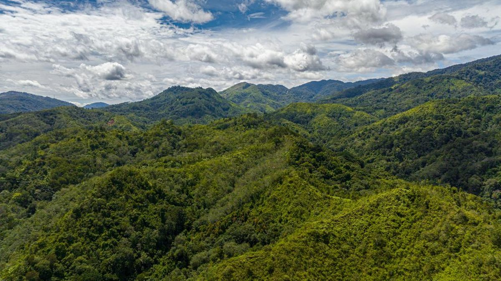

Statistik Hutan Sumatera Utara
Tekanan deforestasi tahunan
17,6 ribu ha
Turun dari puncak tahun sebelumnya, tetapi masih tinggi di lanskap prioritas.
Satwa kunci dipantau
6 spesies
Harimau, gajah, orangutan, siamang, beruang madu, dan rangkong.
Kasus wildlife trade
41 kasus
Pola dominan bergeser ke kanal digital dan pergerakan antar-kota.
Area restorasi aktif
920 ha
Campuran rehabilitasi riparian, koridor satwa, dan pengayaan tutupan.
Satu halaman untuk membaca tekanan hutan, satwa, perdagangan liar, dan pemulihan lanskap.
Dashboard ini merangkum indikator yang paling penting untuk advokasi: arah penggundulan hutan, kondisi satwa kunci, titik rawan wildlife trade, serta kemajuan restorasi. Disusun agar mudah dibaca cepat, tapi tetap cukup kuat untuk mendukung narasi kebijakan.
Ringkasan Cepat
Empat angka yang langsung memberi arah pembacaan.
Bagian ini berfungsi seperti briefing singkat. Sebelum masuk ke grafik detail, pembaca bisa lebih dulu melihat besar tekanan, urgensi satwa, intensitas perdagangan, dan skala pemulihan yang sedang berjalan.
Porsi kehilangan tutupan hutan paling besar masih terkonsentrasi pada lanskap dengan tekanan infrastruktur, kebun, dan pembukaan akses.
Tiga spesies ini memerlukan respon paling cepat karena bertumpu pada habitat besar yang kini semakin terfragmentasi.
Pergerakan jaringan makin banyak berawal dari media sosial, pesan instan, dan perantara kecil di kota-kota transit.
Kinerja lapangan relatif baik, tetapi efektivitas ekologis tetap ditentukan oleh survival rate dan konektivitas habitat.
Pembacaan Utama
Tren membaik di satu sisi belum tentu berarti tekanan berkurang secara keseluruhan.
Dalam kerja advokasi, yang penting bukan hanya total kehilangan hutan atau total restorasi. Yang lebih menentukan adalah pergeseran lokasi, kedekatan dengan koridor satwa, serta apakah intervensi lapangan benar-benar mengurangi kerentanan jangka panjang.

Grafik Utama
Empat grafik untuk membaca situasi secara utuh.
Grafik dipilih untuk menjawab kebutuhan pengambilan keputusan: tren tahunan, tekanan per spesies, kanal perdagangan, dan performa restorasi. Di bawah grafik, ada interpretasi singkat agar pembaca tidak hanya melihat angka, tetapi juga memahami konsekuensinya.
Arah penggundulan hutan tahunan
Menunjukkan perubahan luasan tekanan deforestasi per tahun dalam ribu hektare.
Satwa kunci dengan tekanan tertinggi
Skor menggabungkan fragmentasi habitat, konflik, dan potensi perburuan pada lanskap prioritas.
Moda perdagangan satwa liar yang paling sering muncul
Persentase kasus indikatif berdasarkan jalur pergerakan dan pola transaksi yang terpantau.
Kemajuan restorasi hutan per kuartal
Membandingkan target intervensi dengan capaian lapangan untuk penanaman, pemeliharaan, dan koridor habitat.
Yang terbaca dari tren deforestasi
Penurunan di tahun terakhir belum aman jika hotspot tetap berada dekat koridor satwa dan area tangkapan air. Fokus advokasi sebaiknya bergeser dari sekadar luasan total ke lokasi tekanan yang paling menentukan fungsi ekologis.
- Perlu pembacaan per lanskap, bukan hanya angka provinsi.
- Kawasan penyangga sering jadi titik pergeseran tekanan baru.
- Tekanan akses jalan sering menjadi sinyal awal perubahan cepat.
Yang terbaca dari satwa, perdagangan, dan restorasi
Ketika tekanan habitat tinggi dan kanal perdagangan makin luwes, restorasi tidak cukup diukur dari jumlah bibit atau hektare tertanam. Kinerja sesungguhnya terlihat dari pulihnya konektivitas dan turunnya risiko interaksi negatif dengan manusia.
- Koridor habitat harus dibaca bersama data konflik satwa-manusia.
- Pengawasan digital penting karena transaksi makin tersebar dan kecil-kecil.
- Monitoring pasca-tanam wajib masuk indikator inti restorasi.
Satwa Prioritas
Spesies yang perlu dibaca bersama kondisi lanskapnya.
Kondisi satwa tidak berdiri sendiri. Tekanan pada setiap spesies mencerminkan kualitas bentang alam, keberadaan koridor, tingkat perburuan, dan stabilitas wilayah jelajah.
Harimau Sumatra
Panthera tigris sumatrae- Tekanan terbesar berasal dari fragmentasi habitat dan perburuan oportunistik.
- Konektivitas antar patch hutan menjadi isu kritis di penyangga Leuser.
- Indikator prioritas: jejak konflik, kamera trap, dan integritas koridor.
Gajah Sumatra
Elephas maximus sumatranus- Konflik ruang dengan kebun dan permukiman makin sering muncul di tepi habitat.
- Koridor gerak membutuhkan perlindungan lintas administrasi.
- Indikator prioritas: pola lintasan kawanan dan titik konflik berulang.
Orangutan Sumatra
Pongo abelii- Sangat sensitif terhadap pecahnya kanopi dan gangguan di lanskap hutan primer.
- Habitat riparian dan blok hutan utuh menjadi penyangga utama.
- Indikator prioritas: kualitas tutupan kanopi dan titik isolasi subpopulasi.
Siamang
Symphalangus syndactylus- Menjadi indikator cepat untuk kualitas tajuk hutan yang masih terhubung.
- Pecahnya kanopi mengurangi efektifitas ruang jelajah harian.
- Indikator prioritas: konektivitas tajuk dan gangguan tepi hutan.
Beruang Madu
Helarctos malayanus- Rentan terhadap pembukaan hutan sekunder dan perjumpaan dengan aktivitas manusia.
- Sering kurang terlihat dalam narasi, padahal sensitif pada gangguan lanskap.
- Indikator prioritas: tanda pakan, gangguan kebun, dan jalur perlintasan.
Rangkong Badak
Buceros rhinoceros- Memerlukan pohon sarang besar yang biasanya hilang lebih dulu saat pembukaan selektif.
- Baik untuk membaca kualitas hutan matang dan struktur tegakan.
- Indikator prioritas: pohon sarang aktif dan ketersediaan pakan musiman.
Wildlife Trade Watch
Titik rawan perdagangan satwa liar dan tekanan distribusinya.
Tabel ini membantu pembaca melihat di mana pengawasan perlu dipadatkan: kota transit, kanal digital, perantara kecil, dan simpul logistik yang mempercepat perpindahan satwa atau bagian tubuh satwa.
| Zona Pantau | Pola Dominan | Komoditas Rentan | Tekanan |
|---|---|---|---|
| Medan - Binjai | Perantara digital dan distribusi cepat antar kota | Burung dilindungi, primata kecil, bagian tubuh satwa | |
| Langkat - Aceh Tamiang | Perlintasan dari lanskap hutan ke jalur distribusi darat | Anak satwa, burung, reptil | |
| Batubara - Asahan | Transit campuran melalui logistik kecil dan pengiriman tertutup | Burung kicau, kura-kura, satwa eksotik | |
| Padang Sidempuan - Mandailing | Pengumpulan lokal dari wilayah penyangga hutan | Primata, rangkong, satwa tangkapan liar |
Pipeline Restorasi
Restorasi yang baik tidak berhenti di penanaman.
Halaman statistik ini menempatkan restorasi sebagai proses bertahap: pemilihan lokasi, penanaman, pemeliharaan, penguatan habitat, dan pembuktian dampak ekologis. Ini penting agar publik tidak berhenti pada angka hektare semata.
Seleksi lokasi
Prioritaskan tepian sungai, koridor satwa, dan kantong tutupan yang bisa menghubungkan blok habitat.
Tanam dan pengayaan
Gunakan campuran jenis lokal yang relevan untuk fungsi tanah, pakan satwa, dan kanopi jangka panjang.
Pemeliharaan
Keberhasilan sangat bergantung pada survival rate, kontrol gulma, dan perlindungan dari gangguan berulang.
Validasi dampak
Nilai hasil bukan cuma hektare tertanam, tetapi juga konektivitas habitat, jejak satwa, dan stabilitas area.
Catatan metodologi halaman
Supaya pembaca tidak keliru menafsirkan dashboard sebagai laporan audit final, halaman ini memisahkan fungsi editorial dan fungsi verifikasi data.
- Angka digunakan sebagai indikator pemantauan untuk presentasi visual halaman statistik.
- Untuk publikasi resmi, ganti dataset grafik dengan data terverifikasi dari tim lapangan, basis data spasial, dan catatan penegakan hukum.
- Grafik sengaja memakai bahasa yang lugas agar mudah dibaca oleh publik umum, media, dan pengambil kebijakan.


Sarana
Organisasi
© 2026 Green Justice Indonesia - Hutan Sumut. Semua hak cipta dilindungi.
Statistik disusun untuk komunikasi publik dan dukungan advokasi berbasis data.